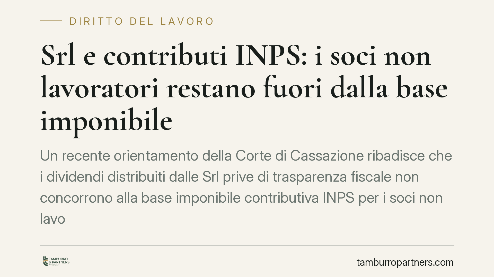

Srl e contributi INPS: i soci non lavoratori restano fuori dalla base imponibile
Un recente orientamento della Corte di Cassazione ribadisce che i dividendi distribuiti dalle Srl prive di trasparenza fiscale non concorrono alla base imponibile contributiva INPS per i soci non lavoratori. Il tema tocca da vicino artigiani e commercianti iscritti alle gestioni speciali e incide sul calcolo dei contributi dovuti. Vediamo cosa dice la norma e quali cautele adottare.

Il contesto
Da anni l'INPS e i contribuenti si confrontano sul perimetro della base imponibile su cui calcolare i contributi previdenziali dei soci di Srl iscritti alle gestioni speciali di artigiani e commercianti. Il nodo riguarda una domanda apparentemente semplice: gli utili distribuiti da una Srl devono essere sommati al reddito d'impresa per determinare i contributi dovuti?
Secondo un recente orientamento della Corte di Cassazione, la risposta dipende dal regime fiscale della società e dalla posizione del socio. Gli estremi esatti delle pronunce (numeri, sezione e date di deposito) sono in corso di verifica: fino alla conferma ufficiale, invitiamo a trattarli con la dovuta cautela e a non assumerli come dato consolidato.
Inquadramento normativo
Il riferimento storico è l'art. 3-bis del D.L. 19 settembre 1992, n. 384, conv. in L. 14 novembre 1992, n. 438. Tale disposizione àncora la base imponibile contributiva degli iscritti alle gestioni di artigiani e commercianti alla totalità dei redditi d'impresa denunciati ai fini IRPEF.
Qui sta il punto tecnico. Nelle Srl non trasparenti (regime ordinario), l'utile prodotto dalla società è tassato in capo alla società stessa; quando viene distribuito al socio persona fisica, esso assume la natura di reddito di capitale ai sensi dell'art. 44 del TUIR, non di reddito d'impresa. Non essendo reddito d'impresa, il dividendo resta fuori dalla base imponibile prevista dall'art. 3-bis.
Diverso è il caso delle Srl in regime di trasparenza fiscale: qui il reddito è imputato direttamente ai soci per competenza, a prescindere dall'effettiva distribuzione, e mantiene la qualificazione di reddito d'impresa. In questo scenario il presupposto contributivo può ricorrere, sempre che sussista anche l'attività lavorativa abituale e prevalente del socio.
Il profilo più innovativo: gli utili a riserva
L'aspetto di maggiore interesse riguarda i soci lavoratori di Srl. L'orientamento in esame esclude dalla base imponibile anche gli utili accantonati a riserva e non distribuiti. La logica è lineare: un utile non percepito non costituisce reddito effettivamente entrato nella disponibilità del socio e, quindi, non può fondare un obbligo contributivo.
Si tratta del passaggio più delicato e potenzialmente più esposto a evoluzioni interpretative. Consigliamo di monitorare eventuali pronunce successive e le reazioni dell'INPS e del Ministero del Lavoro, che potrebbero modulare la propria posizione.
Implicazioni pratiche
Per il socio di Srl non trasparente che non svolge attività lavorativa nella società, il messaggio è chiaro: il solo status di socio, unito alla percezione di dividendi, non genera obbligo di iscrizione né contribuzione alla gestione artigiani o commercianti. L'obbligo contributivo presuppone infatti lo svolgimento di un'attività lavorativa abituale e prevalente.
Per il socio lavoratore, la base di calcolo resta il reddito d'impresa a lui imputabile; gli utili lasciati a riserva non concorrono, secondo l'orientamento richiamato, finché non sono distribuiti.
Attenzione a non generalizzare. La distinzione tra regime trasparente e non trasparente è dirimente e il presupposto dell'attività abituale e prevalente va sempre verificato caso per caso. Estendere automaticamente queste conclusioni a situazioni diverse espone al rischio di contestazioni.
Cosa fare in concreto
- Verifica il regime fiscale della tua Srl: accerta se ha optato o meno per la trasparenza fiscale, perché da questo dipende la qualificazione degli utili.
- Distingui la tua posizione: chiarisci se sei socio non lavoratore o socio lavoratore con attività abituale e prevalente nella società.
- Conserva la documentazione su delibere di distribuzione e accantonamento a riserva: sono elementi decisivi per dimostrare cosa hai effettivamente percepito.
- Riesamina gli avvisi INPS ricevuti: se la contribuzione è stata calcolata includendo dividendi da Srl non trasparente, valuta con un professionista la possibilità di opporti nei termini.
- Monitora l'evoluzione giurisprudenziale, in particolare sul tema degli utili a riserva, prima di assumere decisioni definitive.
Una lettura tecnica della propria posizione, prima di ogni iniziativa verso l'ente, resta il modo più affidabile per evitare errori nei termini e nelle strategie difensive.
---
*Contributo informativo a cura di Tamburro & Partners Avvocati - Avv. Giuseppe Tamburro. Non costituisce parere legale.*
Ogni storia di lavoro ha i suoi tempi.
Se gestisci HR e vuoi un confronto su contenzioso, ispezioni o licenziamenti, scrivi allo studio. Ti rispondiamo entro un giorno lavorativo.